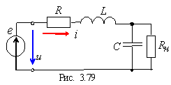

Ќа практике последовательный колебательный контур часто используют как четырехполюсник, снима€ напр€жение обычно с конденсатора — . ќднако величина нагрузочного сопротивлени€ Rн (см. рис. 2.79) должна быть большой, пор€дка 10...100 кќм. ѕри небольших значени€х сопротивлени€ Rн полоса пропускани€ Δω значительно увеличиваетс€, а добротность контура снижаетс€.
|  |
Ёквивалентную добротность контура с нагрузкой определ€ют по формуле:
ѕримечание. ¬ли€ние внутреннего сопротивлени€ источника энергии e(t) на избирательные свойства контура аналогично вли€нию сопротивлени€ нагрузки; обычно его учитывают при расчЄте эквивалентного сопротивлени€ R последовательного контура. |